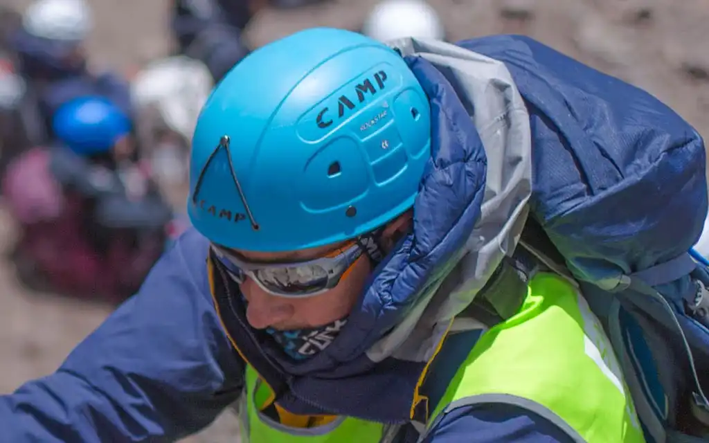

Каска для горных маршрутов

Каска защищает не только от камнепада, но и от ударов о рельеф при срыве или работе на станции. Поэтому ключевой критерий — стабильная посадка: каска не должна съезжать вперед или в сторону при резких движениях головы.
Регулировка должна быть простой и точной, чтобы вы могли подстроить посадку в перчатках и под разные слои одежды. Нормальная посадка ощущается как «плотно, но без точек давления».
Вентиляция влияет на комфорт в длинных подходах, но не должна ухудшать общий уровень защиты. Для технических маршрутов также важна совместимость с налобным фонарем и капюшоном мембранной куртки.
Если каска получила серьезный удар, ее лучше заменить даже при отсутствии явных внешних трещин. Внутренняя структура может потерять часть защитных свойств, и это не всегда видно сразу.
Распространенная ошибка — использовать старую каску с изношенной системой регулировки. Потеря фиксации снижает эффективность защиты сильнее, чем кажется при примерке дома.
Перед каждым выходом проверяйте ремни, клипсы фонаря и целостность корпуса. Быстрый контроль перед стартом — одна из самых полезных привычек в системе личной безопасности.